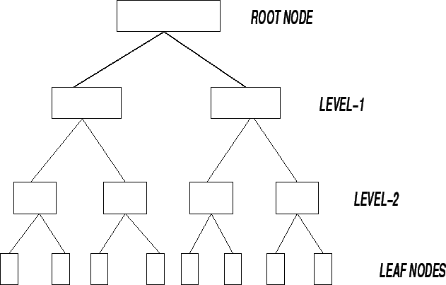

Next: KM Tools and Knowledge
Up: Learning from Data
Previous: Association Rules
Contents
- These are popular tools used for classification.
- A tree represents a network of nodes.
- There exists a root node which represents the starting node of the tree.
- The ending nodes are called leaf nodes.
- The root node and the leaf nodes are usually separated by a number of
intermediate node organizations in layers (called levels).
- At each level, nodes split data into groups until they reach the leaf node.
Figure 10.1:
A Binary Tree
|

|
Knowledge Management Systems
2004-11-01